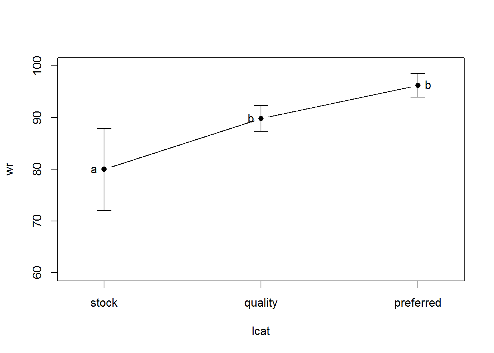
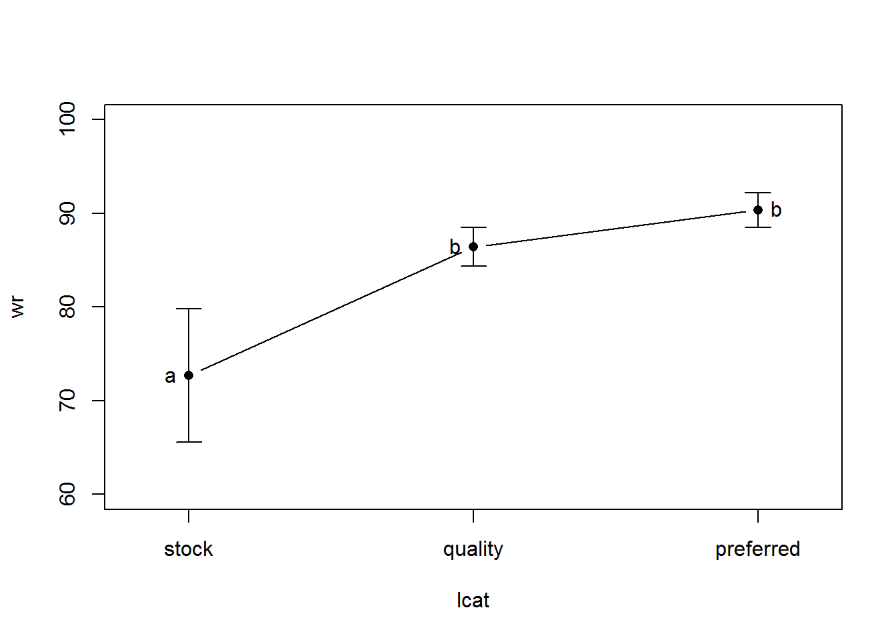

lcat n mean sd min Q1 median Q3 max
1 stock 24 80.0 18.8 45.8 68.5 84.8 92.5 116.2
2 quality 38 89.8 7.5 71.2 85.0 90.9 95.3 101.6
3 preferred 21 96.3 5.0 88.3 92.0 97.3 99.7 103.4
lcat n mean sd min Q1 median Q3 max
1 stock 24 72.7 16.8 43.5 55.1 78.2 86.0 96.8
2 quality 28 86.4 5.3 78.6 82.7 86.0 89.9 99.7
3 preferred 25 90.4 4.5 82.0 87.8 90.3 94.0 98.3
library(FSA)
library(FSAdata)
library(NCStats)
library(dplyr)
library(multcomp)
data(InchLake2)
wsv <- wsVal("Bluegill",simplify=TRUE)
psdv <- psdVal("Bluegill")
bg <- filterD(InchLake2,species=="Bluegill") %>%
mutate(length=length*25.4,
loglen=log10(length),logwt=log10(weight),
lcat=lencat(length,breaks=psdv,use.names=TRUE),
ws=10^(wsv[["int"]]+wsv[["slope"]]*loglen),
wr=weight/ws*100) %>%
filterD(length>wsv[["min.TL"]])
bg07 <- filterD(bg,year==2007)
aov07 <- lm(wr~lcat,data=bg07)
anova(aov07)
mc07 <- glht(aov07,mcp(lcat="Tukey"))
summary(mc07)
cld(mc07)
bg08 <- filterD(bg,year==2008)
aov08 <- lm(wr~lcat,data=bg08)
anova(aov08)
mc08 <- glht(aov08,mcp(lcat="Tukey"))
summary(mc08)
cld(mc08)